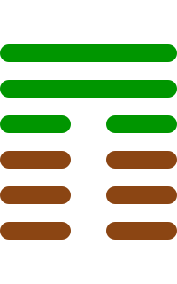

第二十卦
观卦

卦辞
盥而不荐，有孚颙若。
观卦象征观察、观示与瞻仰。卦辞意为：洗手但还没有献祭，有诚信而严肃。观卦教导我们要善于观察事物，明辨是非，保持诚信。
彖传
大观在上，顺而巽，中正以观天下，观。盥而不荐，有孚颙若，下观而化也。观天之神道，而四时不忒。圣人以神道设教，而天下服矣。
彖传说：大观在上，顺从而谦逊，中正以观天下，就是观。洗手但还没有献祭，有诚信而严肃，是下面观看而感化。观察天的神道，而四时不会差错。圣人以神道设立教化，而天下服从了。
象传
风行地上，观。先王以省方观民设教。
象传说：风行地上，就是观卦。先王应当效法这种精神，省察四方，观察民众，设立教化。风吹拂大地，象征广泛观察，先王要考察民情。
爻辞
初六：童观，小人无咎，君子吝
童稚的观察，小人没有灾害，君子有困难。
初六爻位于最下方，观察幼稚。像儿童一样观察，对小人来说没有灾害，但对君子来说是不够的，会有困难。
六二：窥观，利女贞
偷看观察，利于女子坚守正道。
六二爻得中得正，观察受限。从门缝中偷看，视野有限，对女子来说坚守正道是有利的，但不够全面。
六三：观我生，进退
观察我的人生，进退。
六三爻位置不当，自我反省。观察自己的生活和行为，决定进退，表示自我反思的重要性。
六四：观国之光，利用宾于王
观察国家的光辉，利于作为宾客于王。
六四爻接近君位，观察国家。能够观察国家的光荣和成就，有利于作为君王的宾客，参与国事。
九五：观我生，君子无咎
观察我的人生，君子没有灾害。
九五爻居中尊位，自我反省。君子能够观察自己的生活和行为，不会有灾害，表示良好的自我修养。
上九：观其生，君子无咎
观察他人的人生，君子没有灾害。
上九爻位于极点，观察他人。能够观察他人的生活和行为，君子不会有灾害，表示学习他人的经验。